Figure 1. ALeWM learns a wide representation and selects a compact prefix for prediction and planning. The right panel compares ViT-Tiny models with maximum latent dimension 192 against full-width LeWM (d = 192); moving up and left means higher success and lower planning capacity.
Learn a wide representation. Plan with the prefix that matters.
Abstract
We introduce Adaptive LeWorldModel (ALeWM), a world model based on a joint-embedding predictive architecture (JEPA) that learns to concentrate predictive information in compact prefixes of a wide latent representation. To encourage this ordering, ALeWM learns a sequence-conditioned distribution over prefix lengths and trains the predictor to estimate the full next embedding from a sampled input prefix. As standard anti-collapse objectives encourage variation across latent coordinates and do not organize them by predictive importance, we also introduce MixSIGReg. MixSIGReg regularizes the masked embeddings against a prior-weighted mixture with Gaussian active prefixes and zeros in the remaining coordinates. As a result, the ALeWM objective encourages early coordinates to retain information useful for prediction and recursive planning. Our analysis shows that the mixture distribution used by MixSIGReg assigns higher variance to earlier coordinate blocks and lower variance to later ones. In addition, we show that, under specified assumptions, prediction error is minimized by placing the information most useful for prediction in earlier blocks. Empirically, we study the behavior of ALeWM in a controlled dynamical system with known state variables and in goal-conditioned visual control. We show that ALeWM consistently achieves higher mean success rates than tuned fixed-width LeWM, with lower planning capacity on average.
Approach
A learned capacity selector organizes predictive information near the beginning of the latent representation. Two loss terms train the model together.
ℒ = ℒpred + λ ℒMixSIG
01 / PREDICT THE FULL NEXT EMBEDDING
Prediction loss
The encoder produces a full state st. A capacity k is sampled from the learned sequence-conditioned distribution qψ(k | w). The predictor sees only the first k coordinates and the action, and predicts the full next embedding.
zt = Mkst, ŝt+1 = predϕ(zt, at)
ℒpred = 1B(F − 1) ∑b,t ‖ŝb,t+1 − sb,t+1‖22
Earlier coordinates survive more prefix choices, so they are repeatedly asked to carry information useful for predicting the wider representation.
02 / REGULARIZE THE MASKED DISTRIBUTION
MixSIGReg
To prevent collapse while accommodating unequal coordinate use, MixSIGReg matches masked embeddings to a prior-weighted mixture: Gaussian variation in each active prefix, with zeros in its suffix.
p0(z) = ∑k ∈ 𝒦 π0(k) [𝒩(0, Ik) ⊗ δ0]
The match is measured through one-dimensional random projections and their characteristic functions. The reference variance of coordinate j is Prπ₀(K ≥ j), linking its variance to how often the prior keeps it active.
MixSIGReg loss and characteristic functions
With B sequences, F frame positions and P random unit directions u(p), the regularizer is
The frequency window is w(τ) = exp(−τ²/2). Here π₀ is the fixed capacity prior, while qψ is the learned selector. The empirical characteristic function sums over all supported capacities. See Eqs. (5)–(9) in the paper.
At planning time, choose once. The selector takes the initial and goal observations, chooses the most likely capacity, and holds it fixed for the episode. Every recursive prediction is masked to that prefix, and candidate plans are compared with the goal in the same prefix space.
Toy example
Four dynamical factors, ten observation coordinates, eight latent dimensions. Where does the information go?
Two independently controlled damped oscillators provide a known four-dimensional state: two positions and two velocities. We turn that state into ten nonlinear observation coordinates and train ALeWM with a maximum width of eight.
The first four coordinates recover the state with R² = 0.983. In the reported toy experiment, this is comparable to LeWM trained at the matching width of four (0.980), and higher than LeWM at widths six (0.930) and eight (0.904).
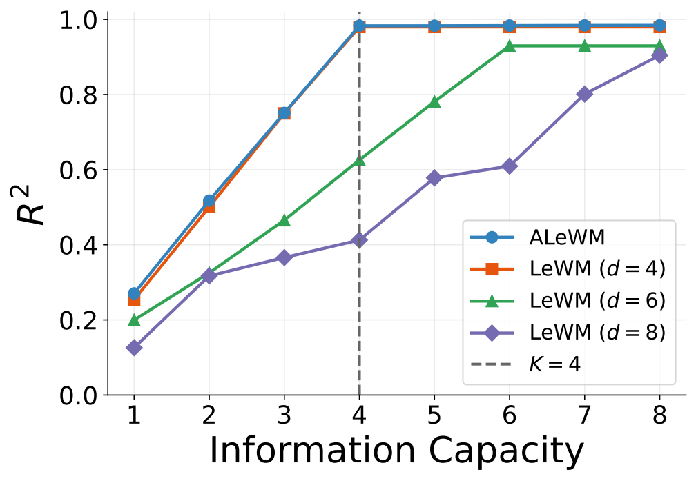
(a) Linear state recovery. Most decodable information fits in the first four coordinates. The dashed line marks the true factor count.
(c) Whitened Procrustes alignment. The first four coordinates align with the known state after whitening and alignment fitted on training data.
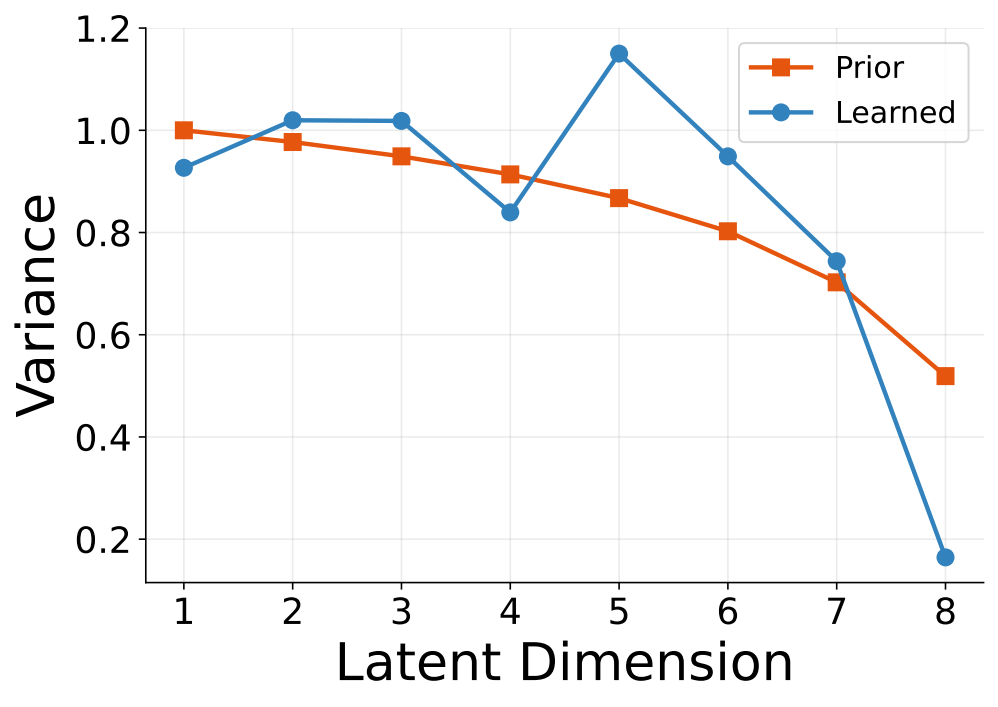
(d) Masked embedding variance. The empirical variance is compared with the prior’s coordinate-survival probabilities.
Figure 2 panels. The paper shows one toy seed and reports consistent behavior across several seeds.
Main results
Goal-conditioned visual control on TwoRoom, PushT, Reacher, and OGBench-Cube.
ViT-Tiny, maximum latent dimension 192 · Table 1
Dataset
LeWM (best d) Success (%)
ALeWM Success (%)
ALeWM Mean Planning Capacity
TwoRoom
95.00 ± 0.00
100.0 ± 0.00
8.00
PushT
92.67 ± 0.33
96.00 ± 0.00
53.49
Reacher
84.50 ± 1.15
85.83 ± 1.01
48.59
OGBench-Cube
72.33 ± 1.17
79.00 ± 0.76
16.00
Mean ± SEM over three training seeds, with 200 held-out test episodes per seed. LeWM’s best latent widths are 32, 160, 160, and 96, respectively. These comparisons use tuned LeWM; Figure 1 above uses full-width LeWM.
Rollout examples
Successful and failed test episodes using ALeWM with ViT-Tiny, dmax = 192 and training seed 3072. Each video shows environment observations after the agent executes model-planned actions, alongside the fixed goal. K is selected once per episode. Videos retain their original 15 fps timing and begin after the first action.
TwoRoom
Test episodes · ViT-Tiny
Example 1● Successful
ALeWM rolloutGoal
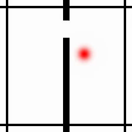
K = 8 / 192
Example 2● Successful
ALeWM rolloutGoal
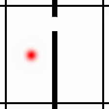
K = 8 / 192
PushT
Test episodes · ViT-Tiny
Example 1● Successful
ALeWM rolloutGoal
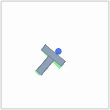
K = 64 / 192
Example 2● Successful
ALeWM rolloutGoal
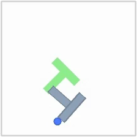
K = 64 / 192
Failure case● Failed
ALeWM rolloutGoal
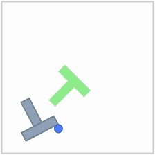
K = 64 / 192
Reacher
Test episodes · ViT-Tiny
Example 1● Successful
ALeWM rolloutGoal
K = 32 / 192
Example 2● Successful
ALeWM rolloutGoal
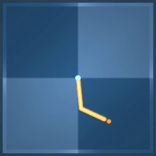
K = 32 / 192
Failure case● Failed
ALeWM rolloutGoal
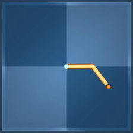
K = 32 / 192
OGBench-Cube
Test episodes · ViT-Tiny
Example 1● Successful
ALeWM rolloutGoal
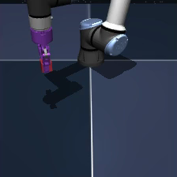
K = 16 / 192
Example 2● Successful
ALeWM rolloutGoal
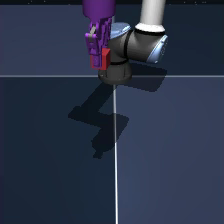
K = 16 / 192
Failure case● Failed
ALeWM rolloutGoal
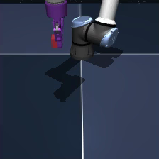
K = 16 / 192
Citation
If you find this work useful, please cite our arXiv preprint.
@article{achituve2026adaptive,
title = {Adaptive Latent Capacity for World Models},
author = {Achituve, Idan and Dikstein, Lior and Diamant, Idit
and Netzer, Arnon and Habi, Hai Victor},
journal = {arXiv preprint arXiv:2609.32921},
year = {2026},
doi = {10.48550/arXiv.2609.32921},
url = {https://arxiv.org/abs/2609.32921}
}